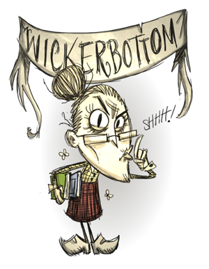
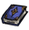
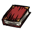

Self publishes books
Can't sleep, hates food spoilage
| Ms. Wickerbottom | |
|  |
|
| Nickname | The Librarian |
| Motto | "Shhhh! No talking!" |
| Perk | Knows many things Self publishes books Can't sleep, hates food spoilage |
| Sanity | 250 |
| Health | 150 |
| Hunger | 150 |
| Special Item |  |
| Starting Items | |
| “ | Knowledge is power! | ” |
| –Wickerbottom | ||
Wickerbottom is the fifth unlockable Character (1280 exp, see Experience for more information on how to unlock her). She is a librarian and an author (and apparently a publisher too), and she can identify many different types of fauna and flora by their scientific names. Wickerbottom can make all Science Machine recipes without having to build the Science Machine, but does not gain the 15 sanity per prototype for those since she already knows them at the start of the game. The rest of the recipes can be prototyped with a research machine one tier lower than the one usually required. Science Machines can make Alchemy Engine recipes. This does not apply to magic research machines. Therefore, only a Science Machine is needed to unlock all science recipes for prototyping. As of the Strange New Powers update, she requires a Shadow Manipulator in order to prototype the "On Tentacles" book.
Wickerbottom also lacks the ability to sleep in a Tent, Bed Roll, or Fur Roll due to her being an insomniac. She also receives a larger sanity loss when consuming Spoiled foods.
Wickerbottom reading the "The End Is Nigh" book
Wickerbottom's Special Power is a crafting tab called Books, as well as starting with 2 Papyrus in her inventory.
This new tab allows Wickerbottom to create different types of magical books with Papyrus and other different ingredients. Depending on what type of ingredient is added you will receive a different type of book with a different type of effect.
Wickerbottom has a maximum sanity of 250, the highest of any characters (excluding a fully upgraded WX-78). However, she suffers from insomnia and she can't sleep, therefore alternative forms of sanity regeneration are required. In winter, it's a struggle to keep her sane.
Making a Top Hat and eating Cooked Green Mushrooms is highly recommended in early stages, as well as going after the Tam o' Shanter and Sewing Kits in winter and later stages.
She also hates spoiled and/or raw food, causing her sanity to suffer greatly.
| Stage | Effect |
|---|---|
| Green (Fresh) | Restores the full amount of |
| Yellow (Stale) | Restores 1/3 (normally 2/3) of |
| Red (Spoiled) | Restores 1/6 (normally 1/2) of |
")
")
| Player Characters |
| Wilson quotes ⋅ clothes • Willow quotes ⋅ clothes • Wolfgang quotes ⋅ clothes • Wendy quotes ⋅ clothes • WX-78 quotes ⋅ clothes • Wickerbottom quotes ⋅ clothes • Woodie quotes ⋅ clothes • Wes quotes ⋅ clothes • Maxwell quotes ⋅ clothes • Wigfrid quotes ⋅ clothes • Webber quotes ⋅ clothes • Unimplemented |

{kind=link}
{kind=link}
{kind=link}
{kind=link}
{kind=link}
{kind=link}
{kind=link}
{kind=link}